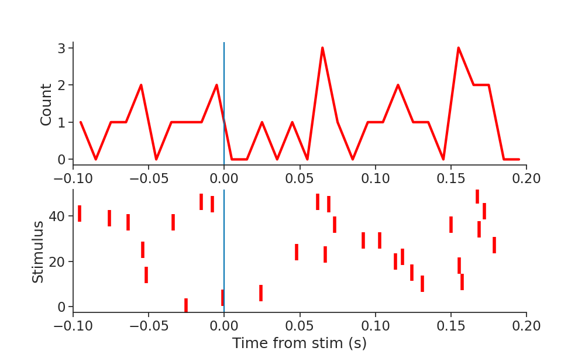

Note
Click here to download the full example code
Advanced processing
The pynapple package provides a small set of high-level functions that are widely used in systems neuroscience.
- Discrete correlograms
- Tuning curves
- Decoding
- PETH
- Randomization
This notebook provides few examples with artificial data.
Warning
This tutorial uses seaborn and matplotlib for displaying the figure.
You can install both with pip install matplotlib seaborn
import numpy as np
import pandas as pd
import pynapple as nap
import matplotlib.pyplot as plt
import seaborn as sns
custom_params = {"axes.spines.right": False, "axes.spines.top": False}
sns.set_theme(style="ticks", palette="colorblind", font_scale=1.5, rc=custom_params)
Discrete correlograms
The function to compute cross-correlogram is cross_correlogram.
The function is compiled with numba to improve performances. This means it only accepts pure numpy arrays as input arguments.
ts1 = nap.Ts(t=np.sort(np.random.uniform(0, 1000, 1000)), time_units="s")
ts2 = nap.Ts(t=np.sort(np.random.uniform(0, 1000, 10)), time_units="s")
ts1_time_array = ts1.as_units("s").index.values
ts2_time_array = ts2.as_units("s").index.values
binsize = 0.1 # second
cc12, xt = nap.cross_correlogram(
t1=ts1_time_array, t2=ts2_time_array, binsize=binsize, windowsize=1 # second
)
plt.figure(figsize=(10, 6))
plt.bar(xt, cc12, binsize)
plt.xlabel("Time t1 (us)")
plt.ylabel("CC")

Out:
To simplify converting to a numpy.ndarray, pynapple provides wrappers for computing autocorrelogram and crosscorrelogram for TsGroup. The function is then called for each unit or each pairs of units. It returns directly a pandas.DataFrame holding all the correlograms. In this example, autocorrelograms and cross-correlograms are computed for the same TsGroup.
epoch = nap.IntervalSet(start=0, end=1000, time_units="s")
ts_group = nap.TsGroup({0: ts1, 1: ts2}, time_support=epoch)
autocorrs = nap.compute_autocorrelogram(
group=ts_group, binsize=100, windowsize=1000, time_units="ms", ep=epoch # ms # ms
)
crosscorrs = nap.compute_crosscorrelogram(
group=ts_group, binsize=100, windowsize=1000, time_units="ms" # ms # ms
)
print(autocorrs, "\n")
print(crosscorrs, "\n")
Out:
0 1
-0.9 1.03 0.0
-0.8 0.88 0.0
-0.7 1.06 0.0
-0.6 0.92 0.0
-0.5 0.89 0.0
-0.4 0.91 0.0
-0.3 1.02 0.0
-0.2 1.10 0.0
-0.1 0.98 0.0
0.0 0.00 0.0
0.1 0.98 0.0
0.2 1.10 0.0
0.3 1.02 0.0
0.4 0.91 0.0
0.5 0.89 0.0
0.6 0.92 0.0
0.7 1.06 0.0
0.8 0.88 0.0
0.9 1.03 0.0
0
1
-0.9 1.0
-0.8 1.0
-0.7 0.0
-0.6 0.0
-0.5 0.0
-0.4 1.0
-0.3 0.0
-0.2 1.0
-0.1 1.0
0.0 0.0
0.1 0.0
0.2 1.0
0.3 0.0
0.4 0.0
0.5 1.0
0.6 1.0
0.7 1.0
0.8 1.0
0.9 1.0
Peri-Event Time Histogram (PETH)
A second way to examine the relationship between spiking and an event (i.e. stimulus) is to compute a PETH. pynapple uses the function compute_perievent to center spike time around the timestamps of an event within a given window.
stim = nap.Tsd(
t=np.sort(np.random.uniform(0, 1000, 50)), d=np.random.rand(50), time_units="s"
)
peth0 = nap.compute_perievent(ts1, stim, minmax=(-0.1, 0.2), time_unit="s")
print(peth0)
Out:
Index rate ref_times
------- ------ -----------
0 6.67 35.4757
1 nan 79.1868
2 nan 88.1569
3 nan 90.508
4 nan 115.251
5 nan 137.802
6 nan 151.913
7 nan 179.321
8 nan 214.017
9 3.33 257.196
10 nan 258.962
11 3.33 284.541
12 nan 378.832
13 nan 389.061
14 nan 393.176
15 nan 402.263
16 nan 418.468
17 nan 424.354
18 nan 429.849
19 3.33 455.055
20 nan 471.276
21 nan 494.362
22 3.33 511.343
23 nan 527.743
24 3.33 536.806
25 3.33 581.077
26 nan 598.782
27 nan 626.413
28 nan 639.655
29 nan 657.579
30 nan 675.623
31 nan 682.449
32 nan 688.411
33 3.33 704.469
34 nan 705.446
35 nan 706.43
36 nan 723.528
37 nan 727.386
38 nan 751.515
39 nan 774.906
40 nan 817.495
41 3.33 823.103
42 nan 840.159
43 nan 865.826
44 3.33 889.637
45 3.33 891.784
46 nan 922.455
47 nan 942.382
48 3.33 950.896
49 3.33 953.499
It is then easy to create a raster plot around the times of the stimulation event by calling the to_tsd function of pynapple to "flatten" the TsGroup peth0.
mkdocs_gallery_thumbnail_number = 2
plt.figure(figsize=(10, 6))
plt.subplot(211)
plt.plot(np.sum(peth0.count(0.01), 1), linewidth=3, color="red")
plt.xlim(-0.1, 0.2)
plt.ylabel("Count")
plt.axvline(0.0)
plt.subplot(212)
plt.plot(peth0.to_tsd(), "|", markersize=20, color="red", mew=4)
plt.xlabel("Time from stim (s)")
plt.ylabel("Stimulus")
plt.xlim(-0.1, 0.2)
plt.axvline(0.0)

Out:
The same function can be applied to a group of neurons. In this case, it returns a dict of TsGroup
pethall = nap.compute_perievent(ts_group, stim, minmax=(-0.1, 0.2), time_unit="s")
print(pethall[1])
Out:
Index rate ref_times
------- ------ -----------
0 nan 35.4757
1 nan 79.1868
2 nan 88.1569
3 nan 90.508
4 nan 115.251
5 nan 137.802
6 nan 151.913
7 3.33 179.321
8 nan 214.017
9 nan 257.196
10 nan 258.962
11 nan 284.541
12 nan 378.832
13 nan 389.061
14 nan 393.176
15 nan 402.263
16 nan 418.468
17 nan 424.354
18 nan 429.849
19 nan 455.055
20 nan 471.276
21 nan 494.362
22 nan 511.343
23 nan 527.743
24 nan 536.806
25 nan 581.077
26 nan 598.782
27 nan 626.413
28 nan 639.655
29 nan 657.579
30 nan 675.623
31 nan 682.449
32 nan 688.411
33 nan 704.469
34 nan 705.446
35 nan 706.43
36 nan 723.528
37 nan 727.386
38 nan 751.515
39 nan 774.906
40 nan 817.495
41 nan 823.103
42 nan 840.159
43 nan 865.826
44 nan 889.637
45 nan 891.784
46 nan 922.455
47 nan 942.382
48 nan 950.896
49 nan 953.499
Tuning curves
pynapple can compute 1 dimension tuning curves (for example firing rate as a function of angular direction) and 2 dimension tuning curves ( for example firing rate as a function of position). In both cases, a TsGroup object can be directly passed to the function.
First we will create the 2D features:
dt = 0.1
features = np.vstack((np.cos(np.arange(0, 1000, dt)), np.sin(np.arange(0, 1000, dt)))).T
# features += np.random.randn(features.shape[0], features.shape[1])*0.05
features = nap.TsdFrame(
t=np.arange(0, 1000, dt),
d=features,
time_units="s",
time_support=epoch,
columns=["a", "b"],
)
print(features)
plt.figure(figsize=(15, 7))
plt.subplot(121)
plt.plot(features[0:100])
plt.title("Features")
plt.xlabel("Time(s)")
plt.subplot(122)
plt.title("Features")
plt.plot(features["a"][0:100], features["b"][0:100])
plt.xlabel("Feature a")
plt.ylabel("Feature b")
Out:
Time (s) a b
---------- -------- ---------
0.0 1 0
0.1 0.995004 0.0998334
0.2 0.980067 0.198669
0.3 0.955336 0.29552
0.4 0.921061 0.389418
...
999.5 0.889961 0.456036
999.6 0.839987 0.542606
999.7 0.781621 0.623754
999.8 0.715445 0.69867
999.9 0.64212 0.766604
dtype: float64, shape: (10000, 2)
Text(732.5909090909089, 0.5, 'Feature b')
Here we call the function compute_2d_tuning_curves.
To check the accuracy of the tuning curves, we will display the spikes aligned to the features with the function value_from which assign to each spikes the corresponding feature value for neuron 0.
tcurves2d, binsxy = nap.compute_2d_tuning_curves(
group=ts_group, feature=features, nb_bins=10
)
ts_to_features = ts_group[1].value_from(features)
plt.figure()
plt.plot(ts_to_features["a"], ts_to_features["b"], "o", color="red", markersize=4)
extents = (
np.min(features["b"]),
np.max(features["b"]),
np.min(features["a"]),
np.max(features["a"]),
)
plt.imshow(tcurves2d[1].T, origin="lower", extent=extents, cmap="viridis")
plt.title("Tuning curve unit 0 2d")
plt.xlabel("feature a")
plt.ylabel("feature b")
plt.grid(False)
plt.show()
Out:
/mnt/home/gviejo/pynapple/pynapple/process/tuning_curves.py:203: RuntimeWarning: invalid value encountered in divide
count = count / occupancy
Decoding
Pynapple supports 1 dimensional and 2 dimensional bayesian decoding. The function returns the decoded feature as well as the probabilities for each timestamps.
First we generate some artificial "place fields" in 2 dimensions based on the features.
This part is just to generate units with a relationship to the features (i.e. "place fields")
times = features.as_units("us").index.values
ft = features.values
alpha = np.arctan2(ft[:, 1], ft[:, 0])
bins = np.repeat(np.linspace(-np.pi, np.pi, 13)[::, np.newaxis], 2, 1)
bins += np.array([-2 * np.pi / 24, 2 * np.pi / 24])
ts_group = {}
for i in range(12):
ts = times[(alpha >= bins[i, 0]) & (alpha <= bins[i + 1, 1])]
ts_group[i] = nap.Ts(ts, time_units="us")
ts_group = nap.TsGroup(ts_group, time_support=epoch)
print(ts_group)
Out:
Index rate
------- ------
0 1.25
1 1.67
2 1.67
3 1.66
4 1.67
5 1.67
6 1.67
7 1.67
8 1.67
9 1.67
10 1.67
11 1.25
To decode we need to compute tuning curves in 2D.
import warnings
warnings.filterwarnings("ignore")
tcurves2d, binsxy = nap.compute_2d_tuning_curves(
group=ts_group,
feature=features,
nb_bins=10,
ep=epoch,
minmax=(-1.0, 1.0, -1.0, 1.0),
)
Then we plot the "place fields".
plt.figure(figsize=(20, 9))
for i in ts_group.keys():
plt.subplot(2, 6, i + 1)
plt.imshow(
tcurves2d[i], extent=(binsxy[1][0], binsxy[1][-1], binsxy[0][0], binsxy[0][-1])
)
plt.xticks()
plt.show()
Then we call the actual decoding function in 2d.
decoded, proba_feature = nap.decode_2d(
tuning_curves=tcurves2d,
group=ts_group,
ep=epoch,
bin_size=0.1, # second
xy=binsxy,
features=features,
)
plt.figure(figsize=(15, 5))
plt.subplot(131)
plt.plot(features["a"].as_units("s").loc[0:20], label="True")
plt.plot(decoded["a"].as_units("s").loc[0:20], label="Decoded")
plt.legend()
plt.xlabel("Time (s)")
plt.ylabel("Feature a")
plt.subplot(132)
plt.plot(features["b"].as_units("s").loc[0:20], label="True")
plt.plot(decoded["b"].as_units("s").loc[0:20], label="Decoded")
plt.legend()
plt.xlabel("Time (s)")
plt.ylabel("Feature b")
plt.subplot(133)
plt.plot(
features["a"].as_units("s").loc[0:20],
features["b"].as_units("s").loc[0:20],
label="True",
)
plt.plot(
decoded["a"].as_units("s").loc[0:20],
decoded["b"].as_units("s").loc[0:20],
label="Decoded",
)
plt.xlabel("Feature a")
plt.ylabel("Feature b")
plt.legend()
plt.tight_layout()
plt.show()

Randomization
Pynapple provides some ready-to-use randomization methods to compute null distributions for statistical testing. Different methods preserve or destroy different features of the data, here's a brief overview.
shift_timestamps shifts all the timestamps in a Ts object by the same random amount, wrapping the end of the time support to its beginning. This randomization preserves the temporal structure in the data but destroys the temporal relationships with other quantities (e.g. behavioural data).
When applied on a TsGroup object, each series in the group is shifted independently.
ts = nap.Ts(t=np.sort(np.random.uniform(0, 100, 10)), time_units="ms")
rand_ts = nap.shift_timestamps(ts, min_shift=1, max_shift=20)
shuffle_ts_intervals computes the intervals between consecutive timestamps, permutes them, and generates a new set of timestamps with the permuted intervals.
This procedure preserve the distribution of intervals, but not their sequence.
ts = nap.Ts(t=np.sort(np.random.uniform(0, 100, 10)), time_units="s")
rand_ts = nap.shuffle_ts_intervals(ts)
jitter_timestamps shifts each timestamp in the data of an independent random amount. When applied with a small max_jitter, this procedure destroys the fine temporal structure of the data, while preserving structure on longer timescales.
ts = nap.Ts(t=np.sort(np.random.uniform(0, 100, 10)), time_units="s")
rand_ts = nap.jitter_timestamps(ts, max_jitter=1)
resample_timestamps uniformly re-draws the same number of timestamps in ts, in the same time support. This procedures preserve the total number of timestamps, but destroys any other feature of the original data.
ts = nap.Ts(t=np.sort(np.random.uniform(0, 100, 10)), time_units="s")
rand_ts = nap.resample_timestamps(ts)
Total running time of the script: ( 0 minutes 1.856 seconds)
Download Python source code: tutorial_pynapple_process.py